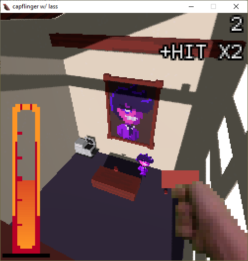
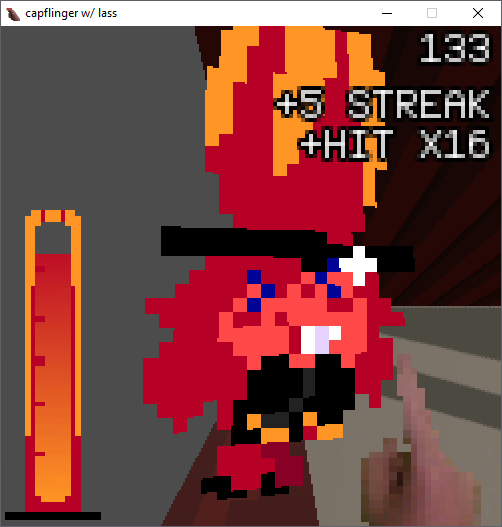
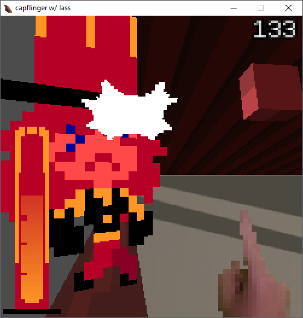

CAPFLINGER
back
home
team up with lass of Dell and Purple Joe: Blinkers Paradox to annoy her boss by pelting him with bottlecaps and ruining his day
careful to not let lass get too excited or she could give you away to pj, but if she gets bored then there isnt much point to keep going
controls:
left mouse to pick up cap or shush lass
when a cap is in hand, hold left click to prime it and move your mouse up and down to adjust arc
scroll wheel to adjust sensitivity
escape to enter menu
characters and art by brack (thanks!)



download (google drive)
this game is unfinished, its buggy and not very fun and the codes a mess because its my first time making sometime so big in godot. i just wanted to move to the next thing